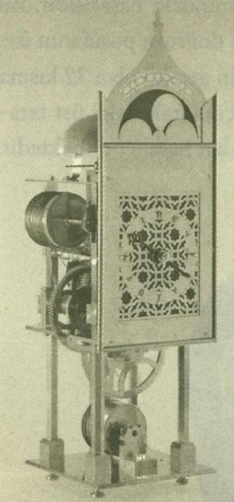

Turan: Bundan yıllar önce, 80’li yılların ortalarıydı. Orta Doğu’nun ve dünyanın en önemli kitap fuarlarından Kahire Kitap Fuarı’nda dolaşırken bir kitap dikkatimi çekti: Târihü’t-Türâsi’l-‘Arabî adlı Arapça yayınlanmış bir kitap. Kitabı şöyle bir karıştırınca çok önemli ve aynı zamanda dünya çapında bir kaynak eser olduğu dikkatimi çekti. Kitabın üzerindeki müellifin adını okuyunca iyice şaşırdım. Üzerinde Fuat Sezgin yazıyordu. Mukaddimesini okuduğumda Fuat Sezgin’in Türk olduğunu öğrenince şaşkınlığım iyice arttı. Üstelik eserin, Almanca yazıldığını ve başka dillere tercüme edildiğini ve tüm dünyada kaynak bir eser olarak kabul edildiğini öğrendiğimde daha da şaşırmıştım. Çünkü Türkiye’de biz bu ismi tanımıyorduk: Sayın Prof. Dr. Fuat Sezgin. Hocam, sizi ve fikirlerinizi tanıyacağız. Frankfurt’ta gerçekleştirdiğiniz ve İstanbul’a da taşıdığınız çok önemli projeleriniz var. Onları sizden, birinci elden duymaya çalışacağız. Ama öncelikle dilerseniz, biraz zât-ı âlinizi tanıyalım... 1924’te Bitlis’te doğdunuz. İstanbul Üniversitesi’nde öğrenci iken 1960 yılında Almanya’ya gitmek durumunda kaldınız. O günlerden biraz bahsedebilir misiniz?
Sezgin: 1943 yılında akrabalarımdan biri beni Edebiyat Fakültesi’ne götürdü. Hâlbuki ben mühendis olma sevdası peşindeydim. O zaman büyük bir Alman âlim vardı. Arapçayı çok iyi bilirdi. Bana “seni onun seminerine götürmek istiyorum” dedi. Ben de “gidelim” dedim ve o büyük âlimin seminerine gittim. O gün o büyük âlim beni adeta büyüledi. Ben artık mühendis olmayı veya başka bir mesleğin peşinde koşmayı kafamdan çıkardım. O büyük âlimin talebesi olmayı düşünüyordum. Kayıt zamanı geçmişti ama gecikmeli de olsa, dekana gittim. Bir şans eseri dekanın odasında bulunduğum sırada o büyük âlim de odaya girdi, iri yarı bir adamdı. Durdu. Dekanla konuşmamın bitmesini bekledi. Dekan ona “Oo... Ritter Bey... ” dedi. “Sizin talebeniz olma başvurusunda bulunan bir insanla konuşuyorum” dedi. Hoca bana şöyle bir baktı, “Galiba bu benim dünkü seminerimdeydi” dedi.
Turan: Yani o kadar kişi arasında sizi hatırladı.
Sezgin: Hayır o kadar çok kişi yoktu. Onun seminerlerine sadece 3-4 kişi giderdi. Çünkü zor bir adamdı. Seminerlerinden kaçardı talebeler. Çok zaman tek bir talebe olarak katıldığımı hatırlarım. Bana, “Gelin, biraz konuşalım. Çok zor bir şeye talipsiniz. Arapça öğrenmelisiniz. Ben de zor bir hocayım. Benim talebelerim hep benden kaçar, biliyor musunuz?” dedi. “Biliyorum, bana bunları anlattılar. Ben bunlara rağmen bu tehlikeye girmek istiyorum” dedim. Güldü, “peki” dedi. Böylece onun talebesi oldum, ikinci hafta seminerine gittiğimde 3 dakika gecikmiştim. Cebinden altın saatini çıkardı ve bana göstererek; “3 dakika geciktiniz, bu bir daha tekerrür etmemelidir!” dedi. Ben ona sadece, “tamam” demekle kalmadım, hakikaten o günden itibaren bütün hayatımda randevularıma gecikmeme prensibine azami dikkat ettim. Galiba o günden bugüne, belki size tuhaf gelir ama sadece üç randevuya, yani 1943’ten bugüne kadar üç randevuya zamanında ulaşamamanın ıstırabım yaşıyorum! Böyle bir hocanın talebesi olma şansına sahip oldum. Nedense bu adam beni büyülemişti ve kendinden önceki bilge kişilerin bilgilerini bana aktardığını hissetmeye başladım. Hiç not tutmazdım. O söylerdi, ben de söylediklerini kafama yazardım. İnanır mısınız anlattıklarının büyük kısmı hâlâ bu kafamda taşınmaktadır.
Turan: Hocam çok af edersiniz... Bir şeyi çok merak ettim. “Ritter’i dinlediğimde, mühendis olmaktan vazgeçtim, beni büyüledi” dediniz. Sizi büyüleyen ne idi? Belki de hayatınızdaki şifre bu olsa gerek. Ritter sizi hangi yönden etkiledi?
Sezgin: O adam büyük Avrupalı oryantalistlerin belki en büyüğüydü. Bu büyük oryantalistler arasında farklı bir tipti. Beni çok etkilemişti. Bu etkilenmeyi size bütün manasıyla aktarabilmem mümkün değil.
Turan: Peki hocam... Hocanız Ritter sizden Arapça öğrenmenizi istiyor ve 6 ay eve kapanıyorsunuz ve Arapçayı öğreniyorsunuz.
Sezgin: Ben zaten Arapça öğrenmeye başlamıştım. Ama hiçbir mesafe kaydetmiyordum. Bütün gayretlerime rağmen hocam benden memnun değildi ilk aylarda. 1943 yılıydı. Almanlar, Bulgaristan’a girmişlerdi. Bizim hükümet, bütün üniversiteleri, mektepleri tatil etti. Hocam bana dedi ki: “Şimdi elinizde bir fırsat var. 6 aylık bir tatiliniz olacak, bu zaman içerisinde Arapçayı öğrenin.” Ben de zaten öyle düşünüyordum. Fakat bu söz bana çok tesir etti. Hakikaten 6 ay kendimi Arapça öğrenmeye verdim. Evimizde babamdan kalma 30 ciltlik bir Taberî Tefsiri vardı. Onu okumaya başladım. Başlangıçta anlamıyordum. Türkçe tefsirlerle karşılaştırarak, yavaş yavaş tefsirin içine girmeye çalıştım. Günde aşağı yukarı 17 saat çalışıyordum. Erken kalkıyordum, gece geç yatıyordum, evden hemen hemen hiç çıkmıyordum. 6 ay sonra Taberî Tefsiri’nin 30 cildini bitirmiş oldum. Başlangıçta hemen hemen hiç anlayamadığım bu tefsiri 6 ayın sonunda gazete gibi okuyordum. O hızla, yani 17 saatlik bir tempoyla çalışırsanız bunu siz de başarırsınız, bundan eminim. Sonbahardı, hocama gittim, ilk ders seminerinde bazı Alman âlimler, profesörler vardı. Hocam önüme Gazzalî’nin İhya’sını koydu ve “Okuyun bakalım!” dedi. Okudum. Gazzalî benim için artık belki bir mesele değildi. Hocam bana baktı, gülümsedi, sevindi, mesuttu. Orada beni biraz methetti. Benim için o an, hayatımın unutulmaz anıydı. Arapçada artık kitapları okuyabilecek hale gelmiştim. Artık başka dillere başvurmak lâzımdı!
Turan: Hocam o dönemde çok önemli bir eseriniz ortaya çıkmaya başlıyor: İslam Bilim Tarihi. Bu esere, Carl Brockelmann’ın (1868-1956) o meşhur 2 ciltlik eserine (Arap Edebiyatı Tarihi) zeyl yazmak üzere başlıyorsunuz. Sonra ortaya bu muhteşem eser çıkıyor. Nasıl oldu hocam bu olay?
Sezgin: Brockelmann’ın kitabı, bir Arap edebiyatı tarihidir. O kitabın en bariz tarafı, en önemli misyonu, fikirler tarihi olmaktan ziyade Arapça bilim kitaplarının bize kadar ulaşmış nüshalarının hangi kütüphanelerde bulunduğunu göstermesindedir. Hocam seminerlerinde ara sıra Brockelmann’ın kitabının birçok noksanı olduğunu, bunların giderilmesi gerektiğini söylerdi. “Birisinin artık hiç olmazsa İstanbul’daki yazmalara dayanarak bu boşlukları gidermesi lâzım!” derdi ve ilginçtir, bunu söylerken de bana bakardı. Ben de içimden, “ben bunu yapacağım” derdim. Bu fikir bende gittikçe yerleşti. Ben zaten daha talebeyken hocamla birlikte Arapça yazmalara giderdik. Yazma kitapların önemini bana anlatırdı. Çok kısa zamanda yazma eserler üzerinde ilerledim. Öyle ki kitapların yazılarına bakarak yazıldıkları tarihleri tahmin eder oldum. Mesela Topkapı Sarayı’ndan 20 tane yazma ısmarlardık. Hocam yazmaların bir kısmını alırdı, bir kısmını da bana verirdi. Yazmaların tarihleri kitapların sonunda yer alır. Biz sonlarına bakmadan tarihlerini tahmin ederdik “filan asırda” diye. Sonra tahminlerimizi karşılaştırırdık. Tabii hocamın tecrübesi daha çoktu. Umumiyetle o daha isabetli neticelere varırdı. Ama bazen, benim tahminlerim doğru olurdu. Talebelerinin başarıları onu çok mesut ederdi. Bazen kendisinden daha iyi tahminler yaptığımı görünce çok sevinirdi.
Böylelikle ben yazmalara olan aşkımı ondan aldım. Üniversiteyi bitirip, doktoramı yapar yapmaz Brockelmann’ın kitabının noksanlarını gidermeyi kafama koydum ve derhal başladım. Doçent olduktan sonra bu işe daha da yoğunlaştım. İş ilerledi. İlerleyince baktım ki, Brockelmann’ın kitabındaki boşluklar giderilebilecek gibi değil. Düşündüm ve Brockelmann’ın kitabını yeni baştan yazma fikrini geliştirmeye başladım. Epeyce mesafe kat ettiğim bir sırada -ki o zamanlar Almanya’dan dönmüştü, 1959 yılıydı zannederim- hocama, “Brockelmann’ın kitabına bir zeyl yazmak değil de, dünyadaki bütün yazmalara bakarak yeni bir kitap yazmak istiyorum” dedim. Bana dedi ki: “Onu yapamazsınız. Bunu hiç kimse yapamaz.” Ben içimden, “hocam bunu yapacağım” dedim ve 1967 yılında kitabımın 1. cildi çıktı.
Turan: Yani 1967’de başladınız ve bugün üzerinden 40 yıl geçti, 2007’deyiz ve kitabın 13. cildini çıkardınız. Evet, 1. cildini yazdınız ve hocanıza verdiniz. Sonra da size ilginç bir sözü olsa gerek...
Sezgin: Hayatımı çok iyi biliyor gibi görünüyorsunuz. Hakikaten orada mühim bir şey var. Kendimden bahsetmek için değil ama faziletli bir hocanın nasıl olabileceğini anlatmak isterim. Kitabın 1. cildini bitirdikten sonra hocama göndermekte geciktim. O zaman o İstanbul’da, ben de Frankfurt’taydım. Benim o zamanki enstitümün direktörüne -ki o da çok büyük bir bilimler tarihçisiydi- gönderdiği mektupta, “Fuat kitabın 1. cildini bana hâlâ göndermedi” diye şikâyet etmiş. Bunu duyar duymaz hemen 1. cildini gönderdim. İlk 2,5 ay cevap gelmedi. Benim için onun cevabı çok mühimdi. Başkalarının cevabı o kadar önemli değildi. Kendisine mektup yazdım, “hocam ne oldu, almadınız mı, ben sizin cevabınızı bekliyorum” diye. Bana bir kart yazdı titrek bir yazıyla... O kartı hâlâ eşim saklar dosya içinde. “Neden acele ediyorsunuz, bu kitabı okumak kolay değil!” diye yazmış. Şunu o hocamın faziletini göstermek için söyleyeceğim... Şöyle yazdı: “Hiç kimse böyle bir kitap yazamadı, bunu sizden başka hiç kimse de yazamaz!”
Ama mübalağa etti. Onun faziletini göstermek için anlatmayı bir vazife olarak görüyorum.
Turan: Hocam, lütfederseniz bu devasa kitabın muhtevasıyla ilgili olarak birkaç cümle söyler misiniz?
Sezgin: O elinizdeki 1. cildi Brockelmann’ın kitabının tesiri altında yazdım. Yani çok muhtasar yazdım. Kitabın adı şudur: Arap Edebiyat/Kültür Tarihi... Geschichte des Arabischen Schrifitums. Fakat aslında bu bir edebiyat tarihi değildir. Bu, bugünün şartları içerisinde yazılabilecek bir İslam Bilimler Tarihi’dir... Neden bugünün şartları içerisinde diyorum? Çünkü etütler ilerledikçe -ki yakında daha da ilerleyecektir- bu kitap değerini kaybedecektir. Çünkü biz İslam bilimlerinin çok az bir kısmını biliyoruz. Ben bu bilineni okumalarımın ışığı altında gün yüzüne çıkarıyorum.
Turan: Siz bu eserinizde “İslam Bilimler Tarihi”nin değişik dallarında Müslüman âlimlerin eserlerini, bir bibliyografya olarak çok geniş biçimde, kaynak eser değerinde insanların önüne koyuyorsunuz... İslam tarihinde İbnü’n-Nedîm’in el-Fihrist’i ile başlayan bir geleneği de var bu işin. Sizin bu eserinizin Arapça çevirisinin önsözünde mütercimler, “Brockelmann’ın eserinden çok daha üstün” diye bir not düşmüş.
Sezgin: Ama müsaade buyurun. Hakikaten Brockelmann buna 1898 yılında başladı. O zamanki etütler çok müsait değildi. O kendi devrinde yapılabilecek işin belki en iyisini yaptı. Ben ondan daha iyisini yapabildiysem tabii, bu benim daha müsait şartlar içerisinde yaşamamın bir neticesidir her şeyden ziyade.
Turan: Peki hocam şimdi tekrar o günlere dönersek, sizin bir de İstanbul Üniversitesi’nden ayrılışınız ve Almanya’ya gitmek zorunda kalışınız var. Ondan da birkaç cümle ile bahseder misiniz?
Sezgin: Bu suali bana her zaman soruyorlar. Ben buna cevap vermeye pek yanaşmıyorum. Çünkü şikâyet etmek istemiyorum.
Turan: 1960’ta askeri darbe olunca...
Sezgin: Çok çocukça bir şeydi o. İnsan çocukların yaptığı hataları affeder. Ben de onun için çocukça diyorum. Ben o hatayı affettim. Bu bana fazla tesir etmedi. Almanya’ya giderek müthiş bir çalışmanın içerisine düştüm. Onun için hiç kızgınlık duymadım, zaten bugün bile duymuyorum. Bir de çocuğun yaptığına karşı insan nasıl bir reaksiyon gösterirse ben de öyle bir reaksiyon gösterdim. Ama şunu söyleyeyim... 1970 seneleriydi galiba. Yine bir askeri darbe gibi bir şey olmuştu. Kardeşim vardı, Refet Sezgin... O bir süreliğine bakanlık yaptı. Üstün zekâlı Türk çocuklarının geliştirilmesi amacına matuf, Almanya’da bir vakıf kurmak istiyordum. Bu vakıf aracılığıyla, senede 10 Türk talebesini finanse ederek, onlara bilimler tarihini öğretecektik. Vakfa yardım sağlamak için Devlet Bakanı Mehmet Özgüneş’e gittik. İlk hükümet darbesini yapanlardan biri de o idi. Kendisini bir ara tanımıştım. Ona şunu söyledim: “Siz askeri darbe yaptığınız andan itibaren daima sizin yanlış yaptığınıza inandım ve size muhaliftim. Siz her şeyi yanlış yaptınız, ama bir şeyi doğru yaptınız... Bu da beni memleketten çıkarmış olmanızdır” dedim, kıpkırmızı oldu.
Turan: Şu bilgiyi aktarayım hocam: 60 darbesinden sonra askeri yönetim üniversitelerden bir kısım öğretim görevlilerini uzaklaştırdı ki bunlar “147’ler” olarak biliniyor. Siz de onlardan biriydiniz. Üniversiteden uzaklaştırıldıktan sonra Almanya’ya gittiniz 1961’de. Frankfurt’ta Goethe Üniversitesi’ne girdiniz. Orada nasıl bir süreç yaşadınız?
Sezgin: Orada da hayat çok kolay olmadı. İki üniversitede ders veriyordum: Frankfurt Üniversitesinde, sonra da Malburg Üniversitesi’nde. Almanya’ya 1957-1958’de misafir doçent olarak gittiğimde Bilimler Tarihi kürsüsünün derslerine iştirak ediyordum. O zaman Bilimler Tarihi’ne olan hevesim daha da artmıştı. Almanya’ya 1961’deki hicretimden iki yıl sonra Bilimler Tarihi Enstitüsü’ne geçtim. Orada yeni bir doçentlik yaptım. Bilimler Tarihi Kimya bölümünde. Bir sene sonra profesörlük verdiler ve ondan sonra Bilimler Tarihi profesörü oldum. İşlerin çapı değişti.
Turan: 1982 yılında Goethe Üniversitesi’nde Arap-İslam Bilimleri Tarihi Enstitüsü’nü kuruyorsunuz. Neden böyle bir enstitü kurmak ihtiyacı hissettiniz. Bu fikir nereden çıktı. Hangi düşünceler sizi buraya itti?
Sezgin: Orada Bilimler Tarihi profesörü olduktan sonra, her hafta seminerlerden başka, dinleyicilerin karşısında konferans şeklinde ders vermek zorundaydım. Bu dersleri hazırlarken İslam Bilimler Tarihi’ne dair ders vermenin ne kadar zor olduğunu gördüm. O zaman etütlerin sayılarının çok olmasına rağmen, derslerin malzemelerinin, yeterli etütlerinin olmadığını hissetmeye başladım. Bu durum bende şu aşkı yeşertmeye başladı: Çok geniş imkânlara sahip bir müessesede İslam Bilimler Tarihi’ni ele almak ve bunu geliştirmek gerekir. Ders vermeye ilk başladığım zamanlarda bu imkân yoktu. Zamanla şartlar gelişti. Şartların tam geliştiğini hissettiğim anda Enstitüyü kurmaya karar verdim. O sıralarda bana İslam dünyasında Kral Faysal Ödülü vermişlerdi. Onu fırsat edindim. Ödül törenine devlet adamları gelmişlerdi, onlarla tanıştım, onlara müracaat ettim ve bir vakıf kurdum. O vakfın finansmanıyla da 1982 yılında Frankfurt Üniversitesi’ne bağlı Enstitüyü kurdum.
Turan: Frankfurt’ta aynı zamanda İslam Bilim ve Teknoloji Tarihi Müzesi’ni kurdunuz. Müze kurma fikri nereden çıktı?
Sezgin: İslam Bilimler Tarihi Enstitüsü’nü kurdum. Çok şeyler vadettim, dolayısıyla bunları yerine getirmem lâzımdı. Esas amacım, İslam Bilimler Tarihi’nin bilimler tarihindeki yerini gerçeğe yakın bir şekilde göstermekti. Bunu nasıl gerçekleştirebilecektim? Birtakım projeler geliştirmek zorundaydım. Birçok proje aklıma geldi... Bu arada şöyle bir proje daha aklıma geldi: Müslümanların icat etmiş oldukları aletleri ortaya çıkararak insanlara tanıtmak, bilinmeyen aletleri gün yüzüne çıkarmak ve bunları müzelerde sergilemek. İslam bilim aletlerini, kitaplardan modeller halinde insanlara tanıtma gayreti ilk olarak benimle başlamış değil. İlk gayreti bir Alman fizikçisi Eilhard Wiedemann’da görüyoruz. O 1900 yılında İslam bilim aletlerinin modelini yapmaya başladı ve hayatının 30 yılında, 1928 yılına kadar 5 aletin modelini yaptı. Bu modeller bugün Münih’in meşhur müzesinde bulunmaktadır. Yalnız, o zamanın tekniği aletlerin güzel yapılmasına imkân vermiyordu. Mesela burada bir usturlap aleti var. O aletin üst tarafını -ki en mühim tarafı odur- kâğıttan yapmıştır. Onu kâğıttan yapmış olmasının sebebi: Orada birçok isim var, birtakım rakamlar var, şekiller var, bunları bir madene kimyasal olarak nakletme tekniği o zaman yoktu. Biz bunu bugün kolaylıkla yapabiliyoruz. Ben başlangıçta bunları maket halinde, model halinde ortaya koymaya başladım. Acaba 30 aleti bir araya getirebilir miyim? Bir müze olmasa bile, bir odayı doldurabilir miyim diye düşünüyordum, çok mütevazı bir şekilde başladım. Gittikçe iş ilerledi. Bugün aşağı yukarı enstitümüzde yapmış olduğumuz aletlerin sayısı 800’ü geçti. İslam dünyasından ve başka memleketlerden kısmen bunları sergilemek ve kısmen de benzeri müzeleri başka memleketlerde kurmak talepleri bana zaman zaman ulaştı. Bunlara umumiyetle, “hayır” demek zorunda kalıyordum. Bir şans eseri neticesinde, son 3 sene içerisinde Türkiye’den bazı teklifler geldi. Bunların ilki Türkiye Bilimler Akademisi’nden (TUBA) geldi. Ondan sonra Türkiye Cumhuriyeti Kültür Bakanlığı’ndan geldi, sonra TÜBİTAK’tan geldi. Sonunda, bugünlerde yavaş yavaş kurmaya başladığımız, İstanbul’daki müze ortaya çıktı.
Turan: Hocam affınıza sığınarak şunu izah etseniz; bu müze veya bu maketleri yapmış olmanın amacı ne? İnsanlar müzeye gidip o aletleri gördüğünde neyi anlayacak?
Sezgin: Evvela 13 ciltlik İslam Bilimler Tarihi’ni yazdım. Bunu birçok insan okuyor. Bazen bir kısmını okuyorlar, bazen tamamını. Kabul ediyorlar veya etmiyorlar. Kitabımın insanlar üzerindeki tesirini öğrenemiyorum. Fakat müzeyi kurduktan sonra baktım aletleri bizzat görmek, onların çalışmasını görmek insanları büyülüyor adeta. Şu kadarını söylüyorum... Bakın dün Frankfurt’taydım ve Berlin Üniversitesi’nden bir profesör geldi asistanıyla birlikte. Kendisi bilimler tarihçisi değil. Benim 5 ciltlik kataloğumu görmüş. Optik cildini okuduktan sonra bu senenin sonuna doğru “İslam’da Optik” konulu bir kongre düzenlemeye karar vermiş. Beni haberdar etti. Bana bir mektup yazdı, “her şeye rağmen hâlâ ümidimi kesmeyeceğim, size geleceğim” dedi ve geldi. Çok sempatik bir adamdı. Asistanlarımdan birine müzeyi gezdirmesini söyledim. İki saate yakın müzeyi gezdikten sonra bana geldi, dehşete düşmüştü. Ben, kataloğuma rağmen bunların ona bu kadar tesir edebileceğini zannetmiyordum, tahmin etmiyordum. Müthiş heyecanlanmıştı. Bu, 65 yaşına girmiş akıllı bir profesörün heyecanı. Bu zannedersem size birçok şeyi ifade eder.
Turan: Hocam, bu müzeyi kurarken takip ettiğiniz prensipleriniz nelerdi?
Sezgin: Prensip, bakın o çok mühim. Bu adam, yine dün beni ziyaret ettiğinde bana şunu söyledi: “Siz, bilimler tarihine bir universalismus getiriyorsunuz. Yani bilimler tarihinin, insanlığın müşterek malı olduğu fikrini getiriyorsunuz. Bunu kitabınızda, kataloğunuzda baştan sona kadar tekrarlıyorsunuz, bu bana çok tesir etti!” Kendisine, burada İstanbul’da kurmakta olduğum müzeden bahsettim. Nasıl kuracağımı anlattım, bana dedi ki: “Bilimler tarihi insanlığın ortak malı düşünceniz müthiş bir düşünce! Bu fikri bir müzenin dört köşesinde sergilemek suretiyle insanlık tarihinde yeni bir merhale açacaksınız.” Bu, hayatımda duyduğum ve bana belki de en çok tesir eden, beni en çok sevindiren bir bilim adamının sözüydü. 1,5 sene evvel vefat etmiş olan bir Alman âlimi arkadaşım vardı Matthias Schramm diye bir dahi. İbnü’l-Heysem’in Fiziğe Götüren Yolu diye bir kitap yazdı. Onda da bu fikir vardı: “Bilimler tarihi insanların müşterek mirasıdır” diye. Ben buna inanıyorum. Bilimler sıçramalar yapmıyor, esasında yavaş yavaş tekâmül ediyor... Bir Fransız âlimi de söylüyor: “İnsanlar keşfetmiyor, insanlar geliştiriyor.” Bugün biz 21. yüzyılın başında bütün insanlığın geliştirdiği bu bilimler manzumesinde maalesef Müslümanların 800 yıllık yaratıcılık merhalesinin bilimler tarihindeki yerini bulamıyoruz. İşte Almanya’da bilimler tarihi profesörü olma mesuliyetini üzerime aldığım günden itibaren bende bir hasret, bir yanılgı hissi olarak bu sorumluluk duygusu gelişti. “Bunu nasıl değiştirebiliriz?” ona gayret ediyorum. Ama Müslümanların kreativitelerini (yaratıcılık hallerini) göstermeye çalıştığımda daima içimden bir ses geliyor, bir frenleme geliyor, mübalağadan kaçınmamı telkin ediyor ve zannederim belki bazı yerlerde mübalağa etmiş olabilirim, tabii ki bilerek değil. Benim bütün yaradılışımı “insanlığın müşterek mirası” fikri kaplamış vaziyette.
Turan: Hocam burada belki bir açılım olur. Bir röportajınızda diyorsunuz ki: “Doğu olmasaydı, Batı olmazdı.”
Sezgin: Ben öyle bir şey söylemedim, yanlış yazılmış.
Turan: Size atfedilen buna benzer bir söz daha var. Diyorsunuz ki: “Batı medeniyetinin temelinde Yunan değil, İslam medeniyeti vardır!”
Sezgin: Bu da gazetecilerin sözü. Ama bana da biraz uyuyor. Ben şu neticeye vardım: Müslümanlar M. 7. yüzyıldan itibaren bilimleri Yunanlılardan, Hintlilerden aldılar. Müslümanların bir meziyeti vardı. O alışlarında Hıristiyan olsun, Yahudi olsun, ne olursa olsun insanları hoca olarak kabul ettiler. Müslümanlar onlardan süratli bir şekilde öğrendiler. İki yüzyıl sonra Müslümanlar bu ilk merhaleyi, yani başkalarından almayı geride bırakarak yaratıcı olmaya başladılar. Hatta Müslümanlar onlardan bilgiyi alırken, hocalarının faziletlerini hiçbir zaman unutmadılar, onu söyleyeyim. Müslümanlar evvela yaratıcı oldular. Bu 800 yıl sürdü. Miladi 850 yılından itibaren, 16. yüzyılın sonuna kadar Müslümanlar ilimde mütemadiyen yeni şeyler keşfettiler. Yeni ilimler kurdular, eski ilimleri geliştirdiler ve ilerde kurulacak bazı bilimlerin temellerini attılar. Ondan sonra ilimler tarihinde önderliklerini yavaş yavaş kaybettiler. Bugün Avrupa’daki bilimler, İslam bilimlerinin bir başka coğrafyada, değişik tarihi şartlar içerisindeki devamından ibarettir, diye tanımlıyorum. Ama bugünkü Avrupa’da, Batı’da gelişeni yabancı bulmuyorum. Bizim akrabalarımızın geliştirdiği safha olarak kabul ediyorum. Oradaki bilgiyi yabancı bulmadığım için bende bir aşağılık duygusu da yok onlara karşı. Aksi takdirde ben bu 13 cildi yazamazdım. Bir Müslüman iyi şartlar içerisinde çok iyi çalışabilirse, çok büyük neticelere varabileceği inancı var bende. Onun için milletimden, Türk milletinden, Müslümanlardan böylesi bir davranışa sahip olmalarını isterim. Artık Türkler korkak ve taklitçi bir millet olmaktan kurtulmalıdır. Türkler yaratıcı olmalıdır!
Turan: Peki hocam, “İslam dünyası bir dönem yaratıcı oldu, sonra da öncekilerden aldıkları bilimi geliştirdi” diyorsunuz, yani yeni şeyler de kattılar.
Sezgin: Yeni şeyler ifadesi çok az geliyor bana... Yeni şeyler dediğiniz zaman biraz, bir iki şey filan anlaşılır. Öyle değil, Müslümanlar, kendilerinden evvelki bilimleri geliştirdiler. Bu birincisi. İkincisi, yeni bilimler kurdular, bugün Avrupa’da gelişmiş olan yeni bilimlerin kısmen temellerini attılar.
Turan: Örnek verebilir misiniz hocam? Bu söylediklerinizi bir örnekle izah edebilir miyiz?
Sezgin: Yani binlerce misalden bir tanesini mi istiyorsunuz benden? Peki, şu kadarını söyleyeyim, Müslümanlar Hicrî 2. yüzyılda kimya ilmini bir tecrübî ilim olarak kurdular. Bunu kuran adam büyük bir şahsiyet, büyük bir bilim adamıydı: Cabir İbn Hayyan. Cabir İbn Hayyan’ın kitapları 12. yüzyılda Avrupa’ya intikal etti, ona Geber diyorlardı. (Onun Latinlerin kafasındaki hayale dayanan bir resmi vardır. O resmi de müzenin duvarlarında asılı olarak göreceksiniz.) Bu adamcağız kimya ilminde öyle bir ilerleme kat ediyor ki ancak ondan sonra 18. ve 19. yüzyılda ona ilave edilebilecek yeni bazı kıpırdamalar görüyoruz. Bunun yüzlerce misali vardır. Çoğu benim o kataloğun 1. cildindedir. O birinci cildin ana fikri şudur: Bilimler Tarihine Giriş. Kronoloji olarak birçok misal verdim. Tabii kitap şimdi Türkiye’de tercüme edilmiş bulunuyor. Sonra Türk okuyucuları bunları okuyacaklardır. Yüzlerce misali orda verdim. Bu misal kâfi gelmediyse size başka misaller de vereyim.
Müslümanlar 15. yüzyılda Afrika’nın doğusuyla Sumatra arasındaki mesafeyi bugünkü gerçeğe aşağı yukarı tamamıyla uyacak şekilde hesaplayabiliyorlardı, düşünün. Evet. 6.600 km’lik mesafeyi hesaplayabiliyorlardı. Bunun altında müthiş metotlar vardı. Onu da kitaplarımda bulacaksınız, o ne müthiş bir şeydir. Bu, Avrupa’da ancak 20. yüzyılın birinci yarısında mümkün olmuştur. Bir misal daha vereyim. Müslümanlar miladın 10. yüzyılında astronomide o kadar ilerlediler ki şu suali sormaya başladılar: “Dünyanın bir eğimi vardır. 23.5 derece. Bu eğimde bir azalma veya artma var mıdır?” Hatta bunu araştırmak için eski Tahran’da Rey şehrinde bir rasathane kurdular. Rasathanenin de modelini müzede bulacaksınız. 30 sene kadar gözetlemeden sonra şu neticeye vardılar: Dünyanın eğimi muntazaman azalıyor, yani 2000 yılda aşağı yukarı bir derece azalıyor. Bu eğimi gök mekaniği 19. yüzyılda ispat etti. Bir misal daha vereyim, son misal ama! Yanlış anlamamak lâzım. 365 gün zarfında dünya ile güneş arasında en uzak ve en kısa mesafe vardır. Bu en uzak en uzak noktayı Yunanlılar biliyorlardı. Müslümanlar 9. yüzyılda bu en uzak noktanın 1 yılda yerinin değiştiğini fark ettiler. Ve bunu hesaplamaya başladılar. Bunu 11. yüzyılın ilk yarısında meşhur Bîrûnî diferansiyel matematikle hesaplamaya çalışıyor. Tam 4 mevsimde hesaplıyordu. Bunların artımıyla diferansiyel matematikle bunu hesaplamaya çalışıyordu. Onun verdiği sonucu bilmiyorum ama ondan 20-30 sene kadar sonra Zerkâlî adındaki bir Müslüman âlim bu değişmenin yılda 12 buçuk saniye kadar bir değişme olduğunu hesap etti ki bu modern astronomide 11.5’tir, yani demek ki 1 saniye kadar hata etmiştir, anlatabiliyor muyum?
Turan: Bir de, “Amerika’nın keşfi Kristof Kolomb’dan önce Müslümanlar tarafından gerçekleştirildi” diyorsunuz, yoksa bu da mı gazetecilerin sözü?
Sezgin: Hayır... Evet, onu söylüyorum. Müslümanların bir haritasını da buldum. Çok mühim bir harita... Bu hususta internette Almanca ve İngilizce olarak görüşlerimi ihtiva eden 30’ar sayfalık bir yazı var. Onu kitabın 13. cildine de soktum. Bunun Türkçe özeti de hazır. Bu, geçen sene, İstanbul Teknik Üniversitesi’nde verdiğim bir konferanstan ibarettir. Bir de Arapçası vardır. Bütün delilleri orada vermeye çalışıyorum, haritalar veriyorum. Ayrıca Kahire Üniversitesi’nde verdiğim bir konferans daha var bu hususta... Evet, esasında Amerika’ya gitme meselesine Müslümanlar 10. yüzyılda başladılar. Bu hususta tarihi kayıtlar var. Bunlar döndüler, bazen dönemediler. O hususta da birçok kayıt var. O mühim değil esasında. İnsanlar yüzlerce defa Amerika’ya tesadüfen gittiler. Bakın Müslümanlar yalnızca şu hedefle gidiyorlardı: Büyük Okyanus’un öte tarafına ulaşmak. Atlas Okyanusu’nu bilmiyorlardı. Bu gayretle birçok çıkış yaptılar, dönmediler. Mühim olan Amerika haritasının bir kısmını ilk olarak yapmaktır, yapmış olmaktır. Bunu ilk yapan insanlar 15. yüzyılda Müslümanlar oldu. Ona yüzde yüz inanıyorum. Onu ispat etmeye çalışıyorum o yazımda. Kristof Kolomb Müslümanların yapmış olduğu haritaya dayanarak ki, onun tarihçesi de bir haritayla yola çıktığını yazıyor.
Turan: Ne oldu da Müslümanlar birden bire böyle geriledi? Yani İslam dünyasına ne oldu da bilimlerle birden bağımızı kopardık?
Sezgin: Evet, o hakikaten çok zor, çok karışık bir mesele. Bu, 1-1.5 saati alacak bir mesele. Zira 1956 yılında Fransa’da, bir de Frankfurt’ta iki kongreye büyük oryantalistler konu yaptılar fakat cevabını veremediler. Herkes bir tarafın ihmaline, bir tarafın yanlış anlamasına filan bağlamaya çalışıyor. Fakat onların aralarındaki tenakuzlar bu işin gerçeğinin henüz bilinmediğini gösteriyor. Ben o iki kongre metinlerini okuduktan sonra mütemadiyen bu problemle meşgul oldum. Kataloğun 1. cildinin 3. faslında bunu yazdım. Bu bir tarihi meseledir. Yani medeniyetler ebedi olarak yaşamıyorlar. Birtakım tarihi hadiseler geliyor, öncekilere son veriyorlar. Yunanlılar vardı, Yunanlıların yerine Bizanslılar onların bilgilerini taşıyorlardı. 9. yüzyılda mesela Bizanslılar Yunancayı çok iyi bildikleri halde eski Yunanlılardan kalmış olan kitaplardan neticeler çıkaramıyorlardı. Müslümanlar geliyorlar ve üstelik çok iptidai şartlardan geliyorlar. Yani Arabistan’dan, İran’dan, Türkistan’dan geliyorlar. Fakat yeni bir hızla, yeni bir kuvvetle, yeni bir inançla geliyorlar.
Yunancayı bilmedikleri halde halifeleri, İstanbul’dan ve başka yerlerden Yunanca kitapları taşıyor, Bağdat’ta tercüme ettiriyor ve bu şekilde tercümelere dayanarak Müslümanlar Bizanslılardan daha çok neticeye varıyorlar ve onları geçiyorlar. Öbür taraftan Bizanslılar hayali şeyler içerisinde uyuyorlar. Uyuyorlar kelimesiyle şunu kastediyorum: 10. yüzyıldan itibaren Bizanslılar Müslümanlardan bilimleri alıyorlar, tercüme ediyorlar Yunancaya... Ancak ne diyorlar biliyor musunuz? Müslümanların yeni şeyler keşfettiklerinin farkında bile olmadan, umursamadan: “Bunlar hâlâ bizim, Yunanlıların bilimleri”. Böyle bir rüya içerisinde ta 13., 14. asra kadar geliyorlar ve 1453’te İstanbul’u kaybediyorlar. Bunlar tarihi şartlar. Şimdi bunları saymayacağım ama şu kadarını söyleyeyim; bizde umumiyetle İslam’ı din olarak bu geri kalmadan mesul tutarlar. Bunun tamamıyla tarihi bir hakikat olmadığını söylemeyi bir vazife telakki ediyorum. Buna inanıyorum.
Turan: Bunun altını çizmek gerekiyor.
Sezgin: Evet, onu 1. ciltte de izah etmeye çalışıyorum; mesela bir büyük Yahudi Arabist var: Franz Rosenthal. 3 sene önce öldü, benim de dostumdu, 1980 yılında yazdığı kitapta diyor ki: “Eğer İslam dini, bilimi sadece bilim olarak, bilim aşkı olarak himaye etmemiş olsaydı ve sadece onun faydacı tarafı bakımından bilimleri tutmuş olsaydı, bilimler bu kadar süratli ve bu kadar geniş şekilde gerçekleşmezdi. 1. cildin belki 6, 7 ve 8. sayfasında Franz Rosenthal’in çok daha güzel bir şekilde ifade etmiş olduğu fikrini görebilirsiniz.
Turan: Yani din kesinlikle bilimin önünde engel değil.
Sezgin: Hayır! Biz geriliğimizin sebebini yanlış olarak dine bağlarsak da, ben dini himaye etmiyorum, ben tarihi bir hakikati müdafaa ediyorum. Aksi takdirde biz kendimizi tamamıyla kafamızı kuma sokmuş bir devekuşu haline getirmiş oluruz.
Turan: Türkiye’ye gelişinizin, İstanbul’da bulunuşunuzun nedeni, İstanbul’da çok önemli bir müzenin açılıyor olması: İslam Bilimler Tarihi Müzesi. Frankfurt’taki müzenin benzeri olacak.
Sezgin: Evet, belki daha da geçecek bile...
Turan: Sizlerin de teşviki ile biz oradaki eserlerden 2 tanesini buraya getirdik, hatta bir tanesi de benim elimde. Bu objeleri bize biraz anlatır mısınız? Müzeye gittiğinde insanlar ne görecek?
Sezgin: Bakınız şurada bir yer küresi var. Bu küre çok önemlidir. Müslümanlar daha 8. ve 9. yüzyılda Yunanlılardan ve Hintlilerden matematik coğrafyanın bazı esaslarını öğrenmişlerdi. 9. yüzyılın başlarında Halife Me’mun, Marinos’un dünya haritasına bakılarak, enlem, boylam dereceleri ölçülerine dayanarak yeni bir dünya haritası yapılması, yeni bir coğrafya kitabı yazılması emrini verdi. Bu iş için coğrafyacı, astronom ve matematikçiler vazifelendirildi. Bunlar 20-30 sene kadar çalıştılar. Dünyanın mevcut görünüşünü, haritasını yapmayı başardılar. Onların böyle bir haritayı yaptığı, tarihî olarak biliniyordu, fakat kaybolmuştu. Tabii kaybolduğu için önemi bilinemiyordu, tahmin edilemiyordu. Bir şans eseri olarak 1983 yılında ben bu haritayı Topkapı Sarayı’nda bir ansiklopedi içinde buldum. Yazmaların peşinde koştuğum için birçok yazma buldum ama bu benim bulduğum en önemli vesikadır.
Turan: Yani gördüğümüz bu harita Halife Me’mun döneminde yapıldı... Öyle mi?
Sezgin: Evet... Onu biz küre haline getirdik ki küre daha güzel. Bu kürenin şimdi 1.5 metre çapındaki modelini yeni kurmakta olduğumuz müzenin önüne koyacağız. Türk dostlarımdan biri, “Bu Türkiye’de İstanbul’un bir sembolü olacaktır” dedi. Biz Me’mun’un coğrafyacılarının yaptığı bu haritayı Yunanlıların haritalarıyla, yani Batlamyus’un coğrafyasıyla mukayese ettiğimiz zaman çok büyük farklar görüyoruz. En büyük fark şu: (Hatta Batlamyus’un coğrafyasında ben harita yaptığına inanmıyorum. Fakat Marinos diye onun bir selefi vardı. 50 sene evvel bir harita yapmıştı.) Yunanlılarda Marinos, okyanusları bir göl halinde gösteriyor, ona göre karalar okyanusları kuşatıyor. Mesela, “Hint Okyanusu bir göldür, Atlas Okyanusu bir göldür”. Bu farkı bilimler tarihi bilmiyordu. Yani bugüne kadar eski, mesela son 4-5 sene evveline kadar çıkan ansiklopedilerde sadece Yunanlılardan bahsederler, Müslümanların yaptığı haritaları, bu realiteyi bilmiyorlar.
Turan: Yani Yunanlıların haritasıyla mukayese edildiğinde Halife Me’mun’un yaptırdığı bu haritanın daha gerçekçi olduğunu anlıyoruz. Peki, bugünün ölçüleriyle mukayese edildiğinde bugünün ölçülerine yakın mı?
Sezgin: Hayır. O zamanlar Yunanlılar Afrika’nın güneyinden, -ki Afrika’yı bir yarımada şeklinde göstermiyorlardı- dönülebileceğini bilmiyorlardı. Müslümanlar ise 9. yüzyılın sonlarına doğru Afrika’nın güneyinden Çine ulaşabiliyorlardı. Ama bu bir başlangıçtı... Bu haritadan sonra ben coğrafya tarihi üzerinde aşağı yukarı 20 senedir çalışıyorum. Mütemadiyen dünya haritasının tekâmül ettiğini gördüm. Ve şu neticeye vardım: 18. yüzyılın başlangıcına kadar, Avrupalıların elindeki haritaların hepsi ki, çok yanlış haritalar var, tamamıyla İslam haritalarının yarım, yanlış ve doğruya yakın taklitlerinden ibarettir. Bu tespit, çalışmalarımın belki en önemlisi. Evet... Halife Me’mun bir harita yapmaları ve dünyanın büyüklüğünü tespit edebilmeleri için 70 kadar coğrafyacı ve matematikçiyi görevlendirdi. Bağdat’ta ve Şam’da gözlem evi kuruldu. Gözlemler yolu ile öncekilerden daha kesin ölçümlere ulaşmayı hedeflediler. Dolayısıyla Me’mun astronomi tarihinde gerçek anlamda gözlemevi kuran ilk kişidir. Halifenin görevlendirdiği astronomlar bir derecelik boylam uzunluğunu tespit etmeye çalıştı. Suriye ve Irak ovalarında ölçümler yaptılar ve bir derecelik boylam uzunluğunun 56 2/3 ve 57 mil arasında olduğunu tespit ettiler. Bu, bugünkü ölçüm değerlerine çok yakın bir değer olarak kabul ediliyor. Büyük astronomi tarihçisi Carlo Alfonso Nallino “bu ölçümün bilimsel ilk ciddi yeryüzü ölçümü” olduğunu bundan yüz yıl kadar önce belirtmişti.
Turan: Yani boylam uzunluğu, Halife Me’mun döneminde tespit edilmiştir.
Sezgin: Evet. 16. ve 17. yüzyılda Fransızlar bunu taklit etmeye çalıştılar. Müslümanların ulaştıkları neticeleri biliyorlardı ve buna rağmen, “biz bu neticeye vardık” diyorlardı. Hâlbuki onların çalışma tarzı böyle bir neticeye götüremezdi. Artık bundan sonra, bugün özellikle ekvator daha kolaylıkla ölçülebilir. Zira kullanılan eski metotlarla daha iyi bir sonuca varıldığını ben bilmiyorum.
Turan: Önümüzde yine sizin müzeden getirdiğimiz bir usturlabımız var. Bunu bize anlatır mısınız?
Sezgin: Usturlap, Yunanlıların keşfettiği bir alettir. Ama Yunanlıların keşfettikleri alet çok basit bir aletti. Müslümanlar onu M.S. 8. yüzyılda tanıdılar, geliştirdiler, öyle bir hale getirdiler ki, bu alette 28 astronomik ödev başarılıyor. Bu 10. yüzyıldan itibaren Avrupalılara intikal etti. Avrupalılar 16. yüzyıla kadar, şekil bakımından güzel usturlaplar icat ettiler. Fakat astronomik hizmet bakımından Müslümanların yaptığı usturlapların düzeyine Avrupa’da hiçbir zaman ulaşılamadı. Müslümanlar usturlapla zamanı, güneşin yüksekliğini gözlemeye, güneşin hangi noktadan doğduğunu, battığını ölçmeye çalışırlardı. Bununla mesafeleri ölçersiniz, saat gibi kullanırsınız.
Turan: Yani astronomik ölçümlerde kullanılır.
Sezgin: Evet. Usturlabın en üst tarafında yıldız adları vardır. O yıldızların koordinatları vardır. Onları da alarak zaman ölçmeye yarar o gördüğünüz yazılar. Onların noktaları vardır orada. Onlar gökteki yıldızlarla karşılaştırılarak hangi saatte olduğunuzu göstermeye çalışır. Boylam derecelerini de ölçmeye yarar.
Turan: Hocam bu eserlerin hepsi İstanbul’da Gülhane Parkı içerisinde, sizlere tahsis edilen bir yerde oluşturulan bir müzede, orada hazırlanıyor. Ne zaman görücüye çıkacak bu eserler?
Sezgin: Tahmin ediyorum Kasım ayına doğru. Ben elimden gelen her şeyi yapıyorum. Biz aletlerin % 80’ini buraya hediye ettik, % 20’sini de tamamlamaya çalışıyoruz. Mühim olan şu ki İstanbul Büyükşehir Belediye Başkanı Sayın Topbaş bize o büyük binayı tahsis etti. Beni çok heyecanlandırıyor. Burada yapacağımız müze Frankfurt’takini geçebilir. Frankfurt’taki binamız bu kadar müsait değil. Böyle bir binada bu aletleri çok iyi bir şeklide sergileyeceğiz.
Sadece, aletleri değil, birçok levhayla Müslümanların ilimler tarihinin her safhasındaki başarılarını göstermeye çalışacağız. Tahmin ediyorum, eğer işler yolunda giderse Kasım ayında müzeyi açabileceğiz.
Turan: Sayın Başbakan Erdoğan çalışmalarınıza ilgi gösteriyor mu?
Sezgin: Evet. Sayın Başbakan bununla ciddi bir şekilde ilgileniyor. Kendisinden, açılışın beynelmilel bir açılış olmasını rica ettim, o da kabul etti. İnşallah bu arzu gerçekleşir.
Turan: Müzeyle ilgili eklemek istediğiniz bir şey varsa, buyurun.
Sezgin: Hayır. Müze gelişiyor, açılırsa, istediğim şekilde kurulursa ki, öncelikle Türkler, mensubu bulundukları medeniyetin ne kadar yüksek olduğunu görecekler; benim ilk hedefim bu. Sonra birçok Müslüman, Arap bunu görecek. Tahmin ediyorum birkaç milyon turist bunu görecek. Müslümanlarda bir aşağılık duygusu var, Avrupa medeniyetini yanlış tanıma var, oradaki yerini bilmeme var. Bu durumu tasfiye etmiş olacağız. Müslümanların içinden, daha ziyade benim milletim içerisinden birçok yaratıcı insanın çıkmış olmasını sağlayacaktır inanıyorum.
Turan: Son günlerde hangi bilim dalına daha fazla ilgi duyuyorsunuz hocam?
Sezgin: Hâlâ matematik coğrafya üzerine çalışıyorum. Matematik coğrafya üzerine 3 cilt yazdım. Bunlar İngilizceye tercüme edildi, şimdi 4. cildini yazıyorum. 4. ciltte bundan önceki 3 ciltte verdiğim bilgileri daha çok dokümante etmeye çalışıyorum. Yeni bazı bilgiler ulaştı, deliller ulaştı, bunları göstermeye çalışıyorum. Şu kadarını söyleyeyim: Coğrafya tarihiyle uğraştığım sırada şu gerçeğe vardım ki benim ilim hayatımda çok mühimdir bu. Ben umumiyetle coğrafya tarihiyle uğraşmaya başladığımda şu suali kendi kendime soruyordum; diyordum ki: Müslümanlar astronomide, matematikte diğer ilimlerde bu kadar ileri oldukları halde neden bunlar Avrupalılar gibi koordinatlara, enlem-boylam derecelerine dayanan haritalar yapmadılar? Ben birçok oryantalisti hocalarım olarak kabul ediyorum, onlardan çok şey öğrendim. Matematik coğrafyasının önemini oldukça iyi bildikleri halde Avrupalı oryantalistler, benim hocam olan oryantalistler, Müslümanların bizzat harita sahasındaki başarılarını bilmiyorlardı. Bugünkü dünya haritasını tanıtan kültür dünyası İslam kültür dünyasıdır, diyorum. Eskiden ben de yanlış düşünüyormuşum, şu sonuca vardım: Müslümanlar, ilimler tarihinde herkesin bildiği büyük matematikçiler yarattılar, yetiştirdiler, astronom yetiştirdiler. Bunları herkes biliyor, ilimler tarihi de bir dereceye kadar kabul ediyor bunu fakat Müslümanların coğrafya sahasında dünya haritasını yapma hususunda bu kadar ileri gittikleri bilgisi maalesef bugüne kadar müdafaa edilmiş değildir.
Turan: Bu harita da zaten bu gerçekliği epeyce gösteriyor.
Sezgin: Evet, bu harita yavaş yavaş beni oraya götürdü. Sonra Müslümanların, 13. yüzyılda, mesela Kuzey Asya’nın mükemmel haritalarını yaptıklarını gördüm, bu tip haritalar bulabildim. Artık çorap söküğü gibi arkası geldi... Tabii ki öncelikle o yanlış fikri arkada bırakmak lâzımdı.
Turan: Affınıza sığınarak bir şey sormak istiyorum. Kitaplarınızı Almanca yazıyorsunuz ve başka dillere tercüme ediliyor ama Kataloğun Türkçeye tercümesi maalesef çok gecikmiş olarak yapıldı... İslam bilimleri tarihi ise hiç yapılmadı. Bunu neye bağlıyorsunuz? Yani bizde bilgiye ilgi az mı?
Sezgin: Daha 1. cildin baskısı bitmemişti, benim bir talebem vardı. Erzurum Üniversitesi’nde öğretim görevlisi olarak çalışıyordu. Oradaki Türk arkadaşlarıyla birlikte benim kitabımın ilk fasiküllerinin 80 sayfasını tercümeye başlamışlardı. O zamanlar küçük kardeşim devlet bakanıydı. Benim, kitabın Türkçesini finanse etme imkânım yoktu. Birlikte eski dostum müsteşar Adnan Ötügen’e gittik. O zamanlar Kültür Bakanlığı yoktu, Milli Eğitim Bakanlığı müsteşarıydı, ona gittik. Sene 1967 olmalı, yani kitap daha çıkmamıştı, birkaç ay sonra çıkmış olacaktı. Ona “kitabın tercümesi Erzurum’da yapılıyor, bu işi üzerinize alınız!” dedim... Dedi ki: “Bunun tercümesine ne lüzum var. Çıksın, üç yüz nüsha sonra alırız, kütüphanelere dağıtırız, o zaman daha faydalı olur.” Ondan sonra çektim gittim. Türkçe tercümesi olmadı, kaldı öyle. Tabii zor 13 cildi tercüme etmek. Büyük bir sevinçle ve hürmetle anmak isterim ki Türkiye Bilimler Akademisi (TUBA) bundan 1 yıl evvel bana mektup yazdı... Mektupta şu teklifte bulunuyorlardı: “Biz sizin bu kitabınızı Türkçeye tercüme etmeyi bir vazife kabul ediyoruz ve buna karar verdik, bize müsaade edin.” Ben onlara müsaade ettim. Evvela Kataloğu tercüme edelim, ondan sonra buna başlayalım, dedik. Katalog bitti, ümit ederim onlar şimdi İslam Bilimler Tarihi’nin tercümesine başlayacaklardır. Şunu özellikle söyleyeyim, bir seferinde Başbakan Erdoğan Bey’i ziyaret ettim. Beni tanıyormuş, kitabımı tanıyormuş. Kitabımın çok kısa bir zaman zarfında Türkçeye bütün ciltlerinin tercüme edilmesi arzusunu ısrarla bana söyledi. Bu bana sevgi ve gurur verdi. Bu tercüme o kadar kolay iş değil, inşallah olur. Benim için mühim olan memleketimin Başbakanı bu eseri tanıyor ve değer veriyor. Öbür taraftan Türkiye Bilimler Akademisi tercümeyi bir vazife telakki ediyor. Söylemiştim ya size başlangıçta, Türkiye’yi terk etmek gibi çoğu meseleler kalmadı artık. .. Şimdi kitaplarımla, müzemle ben bir hizmet görme, yeni bir unsur verme sevdası peşindeyim. Onun için bende hiçbir üzüntü ve o kötü talihin hiçbir izi kalmadı.
Turan: Tabii bu bir açıdan sevindirici, ama diğer açıdan da baktığımız zaman yani bu önemli eserin yıllardır bizim dilimize çevrilmeyişi de gerçekten bizim açımızdan çok büyük bir eksiklik. Bunu da belirtmek gerekir. Bildiğim kadarıyla epeyce bir dünya diline tercüme ediliyor değil mi?
Sezgin: İngilizler tercüme etmiyor, Amerikalılar tercüme etmek istedi. Naşir müsaade etmedi, ancak Amerikalı bir bilgin tercümeye başladı. Kanser hastalığına tutuldu, kaldı. Şimdi 10., 11., 12. ciltleri bizim enstitümüzde İngilizceye tercüme edildi. Farsçaya süratle tercüme ediliyor, şu an 5. cilt devam ediyor. Birkaç cildi Arapçaya tercüme edildi, sadece; 5., 6., 7. cildi yapılamadı... Maalesef başka dillere tercümeler doğrudan doğruya Almancadan yapılmıyor, tutuyorlar Arapçadan tercüme ediyorlar. Arapça tercümede tabii bazı hatalar var, onlara yeni hatalar karıştırıyorlar. Bu yanlışlığı ben önleyemiyorum, bu böyle gidiyor.
Turan: Peki hocam kaç dil biliyorsunuz? Bunu şunun için sordum, affınıza sığınarak.,. Hakkınızda okurken 27 dil bildiğinizi...
Sezgin: Hayır mübalağa ediyorlar. Bu kitabı yazmak için bilimler tarihinde birçok eski dili bilmem lâzım, Avrupalı etütleri okumam lâzım. Zaruri bulduğum zaman hemen bir dili öğrenmeye çalışıyorum; mesela coğrafya ciltlerini yazmaya başladığımda baktım Rusça’sız olmaz. Rusça öğrenmeye karar verdim, gittim Rusya’ya.
Turan: Bir bilim tarihçisinin en az kaç dil bilmesi lâzım?
Sezgin: O bir adamın gayretine bağlı, kapasitesine bağlı. Dil öğrenmek bazen zordur bazen kolaydır.
Turan: Türkiye’deki kültür hayatını, Türkiye’de özellikle üniversitelerin bilime gösterdiği değeri nasıl yorumluyorsunuz? Türkiye’deki bilim tarihini incelediğiniz zaman nasıl bir tabloyla karşılaşıyorsunuz?
Sezgin: Türkiye’de bir gelişme var. Türkiye’de üniversitelerin sayısı çoğaldı. Sayı mühim fakat biraz kaliteye, derinliğe dikkat edilmediğine şahit oluyorum ve bunu temenni ediyorum, yani üniversitelerimiz zayıf ve maalesef Türklerde Batı dillerine yani dil öğrenmeye karşı bir kompleks var. Bu yıkılmalı, bunu bertaraf etmek lâzım. Avrupa’da İngilizce konuşamayan bir üniversiteliyi tasavvur edemezsiniz ama bizde maalesef dil bilinmiyor, dil kompleksi var. Sonra başka bir şey var... Maalesef ben ilkokul 3. sınıfındayken hangi kültür bakanıydı bilmiyorum, sivri kafalı biri, kültür bakanı Türk mekteplerinden grameri kaldırdı.
Bana dedi ki babam: “Sarf-ı Türkî’yi öğreteyim sana.” O zamanlar gramere Sarf-ı Türkî derlerdi. Bugün belki bilimler tarihçisi olabildiysem, babamın Sarf-ı Türkî’yi öğretmiş olmasının çok büyük etkisi vardır. Eğer o Alman Ritter’in ilk derslerini anlayabildiysem belki bende biraz gramer düşüncesinin gelişmiş olmasının payı vardır. Türklerin gramer bilgileri yok, o yüzden dili öğrenemiyorlar, bazen iyi konuşuyorlar fakat yazamıyorlar. Bu bizim milletimizin önemli problemlerinden biridir.
Turan: Başta söylediniz ama sizin bu çalışmalarınız Batı dünyasında bilim adamları arasında nasıl bir etki doğuruyor. Size nasıl bir yansıması oluyor?
Sezgin: Çok zor bir sual. Nasıl cevap versem acaba! 1. ciltte benim bir hadis teorim var, birçok insanı şaşırttı. Bazı bilim adamları bu teorimi yazdılar, reddedemediler. Teorim şu: Daha evvel oryantalistler, hatta son yüzyıllarda Müslümanlar da bütün hadis kitaplarının muhtevasının şifahî olarak kulaktan anlatma yoluyla insanlara ulaştığını zannederlerdi. Mesela Buhârî’nin kaynaklarının, ta 1. yüzyıla kadar yazılı olduğuna inandım, ispat ettim. Doçentlik tezi olarak da bu konuyu almıştım. Almanca olarak, 1967’de ilk cildi çıkmış olan kitabımda bütün ilim dünyasına hadis teorimi tanıttım. Dediler ki “böyle bir teori getiriyor ama bunun doğruluğunu, yanlışlığını artık zaman ispat edecek.” Böyle ihtiyatlı bir üslup kullandılar. 10-15-20 sene geçti, kimse bir şey yapamadı, sonra bakın şunu söyleyeyim; şu 10-15 sene içerisinde tezin yanlış olduğunu ispatlamaya çalışan bir ekol meydana geldi ya da bir grup, bir organizasyon ortaya çıktı Almanya’da, Hollanda’da, İngiltere’de, Amerika’da, vs. Bunların karşısında, müdafaa eden daha küçük bir zümre oluştu. İslam’da Bilim ve Teknik adıyla Türkçeye de çevrilmiş olan 5 ciltlik Kataloğumun önsözünde, 1. cildinde biraz temas ediyorum, o tezin yüzde yüz doğru olduğuna bugüne kadar inandım ve yine şuna inanıyorum ki bu hadis teorisinin yanlış anlaşılması, İslam tarihinin temellerinin Avrupalılar tarafından tanınmayışının sebeplerinden biridir. Maalesef şunu diyorum: Mesela, bir Taberî Tarihi var, 10-15 ciltlik bir tarih, oradaki bütün haberler şeklen mi bir râviler zincirini takip ederek yoksa şifahî olarak mı geliyor? Bir anlayışa göre şifahi yani sözlü olarak. Hâlbuki ben onların dipnotları olduğuna inanıyorum. Böyle olunca ben Müslümanların ta ilk yüzyıllarında dipnot metodunu ortaya koyduklarına inanıyorum. Onlar da diyorlar ki, “hayır bunlar uydurmalardan ibarettir.” Müslümanlar 9. yüzyılda bir tarih kitabı yazdılarsa bunun muhtevası sadece muayyen zümrelerin uydurdukları bilgileri kitap haline sokmaktan ibarettir.
Ben dipnot olarak düşünüyorum ama onlar diyorlar ki: “uydurma şeylerdir.” İslam dünyasında da bunun müdafaası başladı. Şimdi o coğrafya ciltleri bittikten sonra, benim 20 yıl evvel yazdığım 3-4 cilt kitap daha var: Bilimler Tarihi’nin ciltleri... Bunlardan ikisi beşeri coğrafya. İkincisi de edebiyat ciltleri. Edebiyat ciltlerini yakında ele alacağım. Bütün bu kritiklere cevap vereceğim. Doğruluğuna hâlâ çok inanıyorum. Bu sadece birinci cildi... Tabii öbüründen artık her ciltte ayrı ayrı bahsetmem lâzım. Ancak konu çok uzar.
Turan: Hocam, maşallah 82 yaşındasınız, hâlâ böylesine heyecanla bilim hayatından bahsediyorsunuz, gıpta etmemek elde değil. Günde kaç saat çalışıyorsunuz?
Sezgin: Şimdi tembelliğe başladım, eskisi kadar çalışamıyorum. Eskiden 17 saat çalışabiliyordum şimdi 3-5 saat azalttık. Sabahleyin 07.30’da enstitüye ilk giden benim. Saat 18.00’de enstitüden çıkıyorum ve sonra da evde çalışmaya devam ediyorum.
Turan: Öğrencileriniz?
Sezgin: Emekli olduktan sonra artık ders vermiyorum. Verebilirdim ama kapasitemin üzerine çıkıyorum. O kadar çok işim var ki müze kuruyorum, bu ciltleri yazıyorum, enstitünün birçok projeleri var. Enstitü olarak bugüne kadar 1400 cilt kitap neşrettik. Bunların hazırlıklarını yapıyorum, önsözlerini yazıyorum...
Turan: Hocam çok teşekkür ediyorum. Geldiniz bizleri şereflendirdiniz. İstanbul’daki müzenin de herkes için hayırlı olmasını diliyoruz.
Turan: Frankfurt’taki müzeyi kurma fikri nereden çıktı?
Sezgin: 1982 yılında Frankfurt Üniversitesi’ne bağlı, finansmanını bir vakfın karşıladığı bir enstitü kurdum. İddialı bir enstitüydü. İki hedefim vardı. Daha evvel Frankfurt Üniversitesi’nin tabii bilimler sahasında ders verirken orada İslam bilimlerinin, oryantalistlerin ve Avrupalı âlimlerin bütün gayretlerine rağmen çok iyi tanınmadığını gördüm. Mesela bazen ders vermek için zorluklarla karşılaşıyordum. Dersi verebilmek için bütün bir hafta çalışarak, iyi kötü bir şey hazırlayabiliyordum. Etütlerin çokluğuna rağmen İslam bilimleri tarihçiliğinin henüz başlangıç safhasında olduğunu bizzat kendi derslerimi hazırlarken hissetmeye başladım. Bunun üzerine şu fikir gelişti bende. İlk olarak İslam bilimleri tarihi araştırmalarının ve etütlerimin hudutlarını genişletmeliydim. İkincisi, genel bilimler tarihinde Müslümanların iyi tanınmayan yerlerini ve yanlış olarak koyulan hükümleri tashih etmenin bir grup tarafından, büyük bir kitle tarafından yerine getirilebileceğini düşündüm. Bu iki hedefle enstitüyü kurdum. Arap devletlerinden yardımlar da gelmeye başlamıştı. Kendimle baş başa kaldığımda bu mesuliyetleri nasıl yerine getirebileceğimi düşünmeye koyuldum. Düşündükçe yavaş yavaş projeler gelişti. Bu projelerden biri İslam bilginlerinin 800 yıllık kreativite devrinde, yaratıcılık devrinde yaptığı aletlerin numunelerini ortaya koymak ve bunları ihtiva eden bir müze gerçekleştirme fikriydi. Bu çok kolay bir proje değildi. Benden evvel bu işleri yapan, birçok aleti, etütlerinde ortaya koyan Avrupalı âlimler vardı. Hatta benden daha evvel bazı aletlerin modellerini yapan, meşhur büyük bir Alman âlim vardı. Buna rağmen kaç alet ortaya koyabilirim doğrusu bunu bilmiyordum. Başlangıçtan yaklaşık 9-10 ay sonra 7-8 aletin modellerini yapabilmiştim. O zamanki Üniversite rektörü enstitünün kurulmasına çok önem veriyordu. Onu davet ettim, bana şu soruyu sorduğunu hatırlıyorum: “Acaba kaç alet yapabileceksiniz?”, “İlk hedefim 20 alet yapabilmek” diye cevap vermiştim. Gerçekten de, bu 20 aleti ne zaman yapabilirim, diye düşünüyordum. Bugün ise enstitümüzde 800 aletin modellerini yapabildik. Bu benim tasavvur edemeyeceğim bir merhale oldu. Allah’a şükrediyorum bu merhaleye ulaşabildiğimiz için.
Turan: Genel olarak bu aletler neyi anlatıyorlar, bize ne mesaj veriyorlar?
Sezgin: Oldukça uzunca cevap vermek icap eden bir soru sordunuz. Evvela aletleri, enstitümüzün müzesi oldukça büyük bir tekâmül safhasına ulaştığı zaman birçok Alman misafirime gösterdim. Büyük bir dehşet içerisine düştüklerini gördüm. Bana hemen hemen hepsi aynen şu suali sordular: “Peki Müslümanlar bilimde bu kadar ileri olduklarına göre neden bugün bu kadar geriler?” Demek ki müze insanlar üzerinde bir kırbaç tesiri uyandırıyor. Geçen günlerde bana bir Almandan mektup geldi. Mektupta diyor ki: “Biz Yunan bilginleri tarafından icat edilen aletler üzerinde çalışıyoruz. Öğrendiğimize göre, sizin bir müzeniz varmış. Acaba aletlerin İslam dünyasındaki tekâmüllerine dayanarak müzemizi nasıl zenginleştirebiliriz?” O zat kendi icat ettikleri aletlerin, Müslümanların buluşu olduğunu hiç aklına getirmedi. Müslümanların sadece Yunanlıların aletlerini geliştirdiklerini zannediyordu. Maalesef bizim insanlarımızın da bir kısmı bu kadar çok aletin Müslümanlar tarafından icat edildiğini düşünemiyorlar.
Bilimler tarihiyle yaklaşık 60 yıldır uğraşıyorum, bende gelişen tahayyül şu: Ben medeniyet tarihini bir bütün olarak kabul ediyorum. Bu, bütün insanlığın müşterek malıdır. Eğer Kongo’daki insanların bugün o medeniyetin gelişmesine katkıları yoksa da, onlar bizim Afrika’nın ücra bir köşesinde kalan kardeşlerimizdir. Bizler, Yunanlılar ve bugünkü modern Avrupalılar modern teknolojiyi geliştirmişlerse, o başka bölgelerde yaşayan insanların da bu süreçte katkısı vardır. Ben bilimler tarihine böyle bakıyorum. Bilimler tarihinin gelişmiş safhalarında, insanlığın büyük ve müşterek tarihinden öğrendiğimize göre Babillileri, Çinlileri, Hintlileri, Mısırlıları da buluyoruz. Yunanlıları da... Bu böylece gelişiyor.
Ama bu bilimler tarihi ise başlangıç olarak Mısırlıları kabul ediyor. Babillileri de kabul etmeye başladı ama Müslümanların bir şeyi icat ettiğini söylediğinizde hemen hücuma geçiyorlar! Avusturyalı büyük bir bilgin vardı, diyor ki: “Yunanlıların bilimler tarihinin başlangıcında değil gelişmesinin ortasında olduğunu söylediğimiz zaman büyük hücumlarla karşılaşıyoruz!” Bu fikir hâlâ devam ediyor. Belki yavaş yavaş değişmeye başladı ama o değişmeyen kafaların yanında değişme oranı çok küçük kalıyor.
Turan: Yani Müslümanların bilime katkısını hâlâ kabul etmiyorlar.
Sezgin: Aslında bizim Türklerin bir kısmı da kabul etmek istemiyor! Gerçekten enteresan, inanmak istemiyorlar. Almanya’da Müslümanların bilimler tarihindeki yerini bilen insanlar Türkiye’de bilenlerden sayıca fazla. Alman bir felsefeci Hanım Sigrid Hunke, Batının Üzerine Doğan Allah'ın Güneşi kitabının sahibi, okudunuz mu, bilmiyorum? Kendisi oryantalist olmamasına rağmen bu çok akıllı kadın oryantalistlerin müspet tespitlerine dayanarak çok mühim bir kitap yazdı. Bu kitap Japoncaya, Arapçaya, Fransızcaya tercüme edildi ama İngilizceye tercüme edilmedi. Ve bu kitap Türkçeye de tercüme edildi. Peki kimin tercüme ettiğini biliyor musunuz? 60’lı yıllarda, parlamenter olduğundan dolayı hapse düşen bir ağabeyim vardı: Servet Sezgin. Allah rahmet eylesin. 3 ay evvel vefat etti. Hapse düşer düşmez Almanca öğrenmeye başlamıştı. Bir sene boyunca Almancayı öğrenmişti.
Benim eşim de oryantalist bir Alman’dır. “Bu kitabı ağabeyine gönderelim” dedi. Kayseri’deyken bu kitabı ağabeyime gönderdik. Bu kitabı orada öğrendi. Ağabeyim aslında çok zor bir kitap olmasına rağmen bu kitabı tercüme etmeyi başardı. Şu noktaya gelmek istiyorum. Almanlar aslında Türklerden çok daha iyi biliyorlar Müslümanları. Ama buna rağmen inkâr edenlerin sayısı da çok. Bundan 14 ay evvel Alman televizyonlarından biri “dünyanın mucizeleri” adlı bir programda bizim müzenin 30 dakikalık kısa bir filmini yaptı. Programın yapımcısı bu programdan dolayı ölüm tehditleri aldı. Bize tehdit gelmedi ama o adamcağız, “bu işe girerseniz hayatınız tehlikeye girer” diye tehditler aldığını bize anlattı. Alman bilginlerinin, İslam bilginlerinin başarılarını tanıma hususundaki bilgilerimizin gelişmesinde çok büyük katkıları vardır. Ama öbür tarafta da böyle bir taassup var!
Turan: Hocam bir yerde diyorsunuz ki: “Müslümanlar aşağılık duygusundan, Batının da üstünlük duygusundan kurtulması gerekir!” Çalışmalarınızdan biz şöyle bir sonuca varıyoruz: Bugün Batı medeniyeti varmış olduğu noktaya aslında kendinden önceki Müslüman bilginlerden almış olduğu bilgiyi tamamlayarak geldi. Yani bilgi sadece Batı medeniyetine ait bir bilgi değildir. Bunun çok çarpıcı bir örneği bir saat var... Sizin müzeden... Bu saati bize anlatmanızı istesek.
Sezgin: Onu anlatırım ama bu suali sorarken bana çok önemli bir meseleyi hatırlattınız. Son üç aylık çalışmalarım arasında ulaştığım bir netice var. Onu sizlerle paylaşmak isterim. Müslümanlar 16. yüzyılın ortalarına kadar bilimde Avrupalılara nispetle daha ilerdeydiler. Fakat Avrupalılar Müslümanlardan bilgiyi 10. yüzyıldan itibaren aldılar. Bu alış merhalesi tam 500 yıl sürdü. Bizim Türklerin çoğu bunu bilmezler. 17. yüzyılın başlarında Avrupalılar önderlik konumuna geçtiler. Ve üstünlük duygusu, böbürlenme merhalesi başladı onlarda. Manevi bilgiler sahasına baktığımız zaman ki, manevi bilgi derken İslam dinini kastetmiyorum, felsefe tarihi ve coğrafya bilimlerinde Müslümanlar daha ilerde idiler. Müslümanlarda da siyasi gerileme başlamıştı. Yavaş yavaş da bu gerilemeleri görüyorlardı. Ve onlar geçmişteki ileri konumlarını unutmuşlardı. Bilimler tarihi diye bir alan da olmadığı için gelişmelerin nasıl olduğunu bilemezlerdi. Müslümanlar onların teknolojik sahada gelişmekte olduklarını, onların üstünlüklerini görmeye başladılar. Müslümanlar Avrupalıların bu noktaya nasıl geldiklerini bilemiyorlardı. Ama 17. yüzyıldan itibaren onların bilimdeki üstünlüklerini kabul etmeye başladılar. Benim milletimden Avrupalıları yanlış tanıyan, İslam dünyasını bilmeyen bazı kişiler olabilir, onlar benim bu sözlerimi yadırgayabilirler; ama ben bu anlattıklarımı sürekli tekrar ederek, o muhteşem aletler ile onların yanlış fikirlerini değiştirmeye çalışacağım. Şimdi söylemek istediğim şey şu: Hollandalı bir oryantalist. Adı Golius... İstanbul’a IV. Murat’ı ziyarete gelmiş. Hatta İran’a yapılan harbe bile Osmanlı askerleriyle birlikte katılmış bir adam. O sırada tabii Halife Murat’ı tanıyor. Halife Murat ona diyor ki: “Bize Osmanlı İmparatorluğu’nun haritasını yapamaz mısınız?” Bir insan koskoca imparatorluğun haritasını nasıl yapabilir? İstanbul’un haritası ancak birkaç kişiyle yapılabilir ve uzunca bir zaman alır. Avrupalıların elinde olan bütün haritaların, İslam dünyasında daha evvel yapılmış olan haritaların bir taklidi ve parçalarının bir araya getirilmesi ve bozulması şeklinde olduğunu bilemezdi Halife IV. Murat. Bunu dünyada bilen yoktu. Ben sonraki araştırmalarımda, hayatımın son 20 senesini coğrafya tarihiyle uğraşarak geçirdim. 12-13 senelik sürede bu durum kafamda yavaş yavaş olgunlaşmaya başladı.
Turan: Yani Müslüman âlimlerin çalışmalarını parça parça toplayarak kendileri bir araya getirmişler ve bunu bize sunmuşlar.
Sezgin: Evet, kendileri de söylüyorlar ve ben bunlardan kendi kitaplarımda 11., 12. ciltlerde bahsetmiştim. Fakat işin daha önemli kısmına geliyorum. Araştırmalarımın son aylarında dehşet bir şeyle karşılaştım. Bizim Kâtip Çelebi diye çok büyük bir bilginimiz var. Keşfüzzunûn diye kitap yazmıştır. Muazzam bir kitap. 16 bin adet Farsça ve Arapça kitabın kataloğu vardır. Çok çalışkan bir adam. Bir de Cihannüma diye bir kitap yazmıştır ki Osmanlı İmparatorluğunda İbrahim Müteferrika’nın ilk bastığı kitaplardan biridir. Cihannüma, tüm dünyanın çok önemli addettiği bir coğrafya kitabıdır. Bende de çok güzel bir nüshası vardır. Hep düşünürdüm acaba Cihannüma’da ne var, diye. Kitabımın 15. cildini yazıyordum, Osmanlı coğrafyacıları hakkında bilgi toplamam lâzımdı. Kâtip Çelebi’yi etüt ettiğimde büyük bir faciayla karşı karşıya kaldım. Facia da şu: Kâtip Çelebi, genç yaşta öldü. Çok çalışkan, gayretli bir insandı fakat İslam coğrafyasının tekâmülünü o zaman bilemezdi, bilmiyordu. Kâtip Çelebi Avrupalılarla temasa geçmeden evvel, bir dünya coğrafyası yazmayı düşündü. Cihannüma “dünyayı gösteren” manasına gelir. İşe Balkanları tanıtmakla başlamış ve bir kısmını yazmış. Yazdıktan sonra Fransız Mehmet İhlasi diye ihtida etmiş bir Müslüman İstanbul’a gelmiş, Kâtip Çelebi’yle tanışmış. Kafasında birçok Avrupalı bilginin kitaplarının adları varmış. Onlardan bahsetmiş Kâtip Çelebi’ye. Kâtip Çelebi’yle Mehmet İhlasi, kitapları tercümeye başlamışlar. Mercator diye bilinen Hollandalı bir coğrafya bilimcisi var. Büyük bir harita kitabı var. Ben yüzde yüz inanıyorum ki Mercator’un, eski dünya haritaları, keşifleri İslam dünyasından gelmiş kendisine. İslam dünyasından gelen haritaları değiştirmiş, kopya etmiş. Akıllı ve çalışkan bir adam. Ama Felemenk’te oturan bir adam Orta Asya’nın haritasını nasıl yapabilir. Bugüne kadar bütün coğrafya tarihi bu haritaları bu adamın yaptığına inanıyor. Aslında ben de inanıyordum. Bunları nasıl yaptı, diyordum. Bütün haritalarını, kitaplarını topladım; onların koordinatlarını, enlem-boylam derecelerini bulabilirim diye. Coğrafya bilim tarihiyle uğraşımın 8-10. senesinde Mercator’un ve bazılarının, hakikaten enlem-boylam derecelerine dayanarak haritaları yapacaklarını sanıyordum. Ancak sonradan kendi kendime Hollanda’daki adamın, Orta Asya’daki göllerin, nehirlerin enlemlerini, boylamlarım nereden bileceğini sormaya başladım. Hakikaten ben şimdi kendime gülüyorum. Düşünsenize insanlar ne kadar gaflet içerisinde olabiliyorlar! Hâlen coğrafyalar tarihinde bu inanç mevcut. Nitekim ben bu konudaki fikirlerimi yazdım ve şimdi onlardan cevap bekliyorum.. . Yazımın üzerinden yedi sene geçti ve bir iki müspet yazının dışında hâlâ bir cevap gelmedi.
Gelelim tekrar Kâtip Çelebi’ye. Kâtip Çelebi’yle birlikte Mehmet İhlasî, Mercator’un kitabını tercümeye koyuluyorlar. Kitabı bitirmeden evvel Kâtip Çelebi’nin zihni alt-üst oluyor. Ve bugün elimizde olan o meşhur kitabı yazıyor. Kitapta da bahsediyor. Tabii Kâtip Çelebi İslam’ın coğrafya bilimine neler kazandırdığını bilmediği için Mercator’a karşı müthiş bir hayranlık, müthiş bir aşağılık duygusu içerisine düşüyor. Düşününüz Kâtip Çelebi gibi önemli bir insan İslam dünyasını tanımıyor. Tamam, Avrupalılar bugün bizden üstünler fakat o günlerde değillerdi. Onlar, nasıl 10. yüzyıldan 16., 17. hatta ve hatta 18. yüzyıla kadar İslam bilimlerinden buldukları bütün müspet bilimleri, pozitif unsurları aldılarsa, biz Müslümanların hiç korkmadan bugün Avrupalıların ulaştıkları bizde olmayan bütün unsurları, bütün buluşları almak için bir yarış içerisine girmeliyiz. Mesela Japonlar bunu yaptılar. Biz Müslümanlar kadar bilimsel bir geçmişe sahip değilken, müthiş şeyler yaptılar fakat biz hâlâ yerimizde sayıyoruz.
Turan: Şimdi o saati görelim isterseniz, onun üzerinden gidelim. Sizin müzede sergilenen bu saatin önemini, kendisini bize anlatabilir misiniz?
Sezgin: Bu saatlerden yalnızca bir tanesi. Yan tarafından baktığımızda çok muhteşem bir saat. Bunu Takiyyüddin adlı bir Osmanlı bilgini 1553 yılında yapıyor. En önemli tarafı koni şeklinde bir zembereği var. Çok müthiş bir şey. 10 saati tarif eden bir kitabı var. Bunun iki tanesini yaptık, diğerlerini daha yapamadık. Bu saati yapabilmek, modelini ortaya koyabilmek gerçekten çok zor bir işti.

Osmanlı bilgini Takiyeddin’in 1559 yılında yaptığı mekanik saat. Modelimiz Saatlere Dair kitabındaki resim ve tariflere göre yapılmıştır (Katalog, III, 119; no. B 3.14)
Turan: Saatin yapım aşamasında hangi zorluklarla karşılaştınız, ne kadar süre içerisinde bu eser ortaya çıktı?
Sezgin: Bunu anlamak kolay değil. Saatin kitabı Arapça yazılmış. Yani bu saati yapacak kişi hangi millettense bu kitabı o dile çevirmek zorundasınız, işte bu gerçekten çok zor bir iş. Saati inceledikten sonra Türkiye’de, Mısır’da, İsviçre’de, Suriye’de, İspanya’da, Hollanda ve Almanya’da bazı insanlar aradım. Bu saati yapabileceğine inanan insanlar aradım ama bulamadım. Ümitlerimi yitirmeye başladığım sırada Bremen Üniversitesi’nde Alman bir doçent tanıdım. Bu doçent bilimler tarihiyle uğraşan fakat üniversiteye girmeden önce saatçilik yapmış birisiydi. Bir saat atölyesi vardı. “Ben bunu yaparım” dedi ve saati 1,5 senede yaptı, iki adet yaptı. Biri Enstitüde, biri de burada Müzede.
Turan: Böyle bir saati ortaya çıkarmış olmak neyi ifade ediyor, neyi anlamamız gerekiyor?
Sezgin: Öncelikle şunu söyleyeyim, bu mekanik bir saattir. Peki, Müslümanlar ne zamandan beri mekanik saat yapmaya başladılar? Bu çok münakaşa edilen bir soru. Bu durumu tamamıyla aydınlatabildiğimi düşünmüyorum ama bir tahminim var: Müslümanlar önceden birçok saat yapmışlar. Müslümanlar da, Yunanlılar da saatler yapıyorlardı fakat Yunanlıların saatleri ancak tam saati gösteriyordu. 8. yüzyılda bu bilgileri Müslümanlar aldılar, geliştirdiler ve saatin göstergesini yarım saate kadar indirdiler. Tam da şimdi şu suali sorarsanız insanlara: İnsanoğlu hangi tarihten itibaren dakikaları gösterebilen bir saat yaptı? Bütün mesele budur aslında. Kime sorarsanız sorunuz, eğer bizim Kataloğumuzun saatler kısmına bakmamışsa bunun cevabını size veremez. Bunu ben, ancak 10 sene önce öğrendim. Dakikaları ölçen ilk saat 12. yüzyılın başında İslam dünyasında yapılıyor.
Bunu … adındaki bir fizikçinin kitabından öğreniyoruz ama bu onun mu keşfiydi yoksa devrinin bir keşfi miydi, onu tamamıyla söylemiyor. Büyük bir fizikçi bu adam. Bilgi devamlı tekâmül ediyor. Birçok saat var aslında. İnşallah müzemizde bunları göreceksiniz.
Mesela mekanik saat; su kuvvetiyle değil de bir ağırlık vasıtasıyla çalışan ve bir de bir zembereğin olduğu bir çeşit saat. Bu arada zemberek zannediyorum Avrupalıların icadı. Yani, muhtemelen olabilir, diyorum tam olarak bilmiyorum doğrusu. Su kuvvetiyle değil tabii. Ağırlık saatini biliyor musunuz? Camilerde görmüşsünüzdür. Bu tür saatleri Müslümanlar 14. yüzyılın başlarında bulmuşlardır. Şam’da yaşayan bir âlim bulmuştur.
Turan: O zaman hocam şunu rahatlıkla anlayabiliriz ki eserlerin her birinin ortaya çıkarılması, yapılması sizin açınızdan yıllar alıyor. Meselenin zorluğunu anlamamız açısından, bu küreyi anlatabilir misiniz?.
Sezgin: Bu küre, dünyanın kendi etrafında döndüğünü gösteren bir alet. 10. yüzyılda bazı bilginler tarafından savunulan bir görüşü temsil ediyor.
Turan: Peki bunun yapımından önce Batılılar bunu keşfetmiş miydi?
Sezgin: Yunanlılar hatta belki Babilliler de dünyanın kendi etrafında döndüğünü keşfetmişlerdi ama Batlamyus bunu bilmiyordu. Bir Yunanlı âlim Aristarkhos dünyanın hem kendi etrafında hem de güneşin etrafında döndüğünü düşünüyordu. Büyük bir ihtimalle bu bilgiler Yunanlılara Babillilerden gelmişti. Bu bilgiler Müslümanlara 9. yüzyılda ulaştı. Bazıları bunu kabul ettiler ama etmeyenler de vardı. Hatta “Güneş manzumesi Dünyayla beraber, bütün gezegenlerle beraber çok büyük bir süratle sonsuzluğa doğru uçuyor” diye büyük faraziyeler söz konusuydu. Bir kısmı dünyanın güneş etrafında değil de kendi etrafında döndüğünü kabul ediyordu. İşte bir gök küresi! Gök küresinin görevi şudur; bu sabit yıldızlar haritasıdır. Yunanlılar, Babilliler, Hintliler bu tip gök haritaları yapmışlardır. Müslümanlardan da Abdurrahman Sûfî... Öyle ki Arapların hayatında yıldızlar çok büyük bir rol oynadığı için İslamiyet’ten evvel Arapların sabit yıldızlara dair bilgileri oldukça genişti. Bu bilgiler İslamiyet’le birlikte oldukça büyük bir merhale kazandı. Astronomi tarihi bize bu sabit yıldızlar astronomisine dair 3 büyük merhale aktarıyor. Birincisi Yunanlılarda Hiparhos isimli astronom ve ondan sonra da halefi Batlamyus bunu buluyor. Bu haritayla 10. yüzyıldan Abdurrahman Sûfî adında büyük bir astronom bu sabit yıldızlar astronomisinin ikinci büyük merhalesini gerçekleştiriyor. Bizim Uluğbey’in de büyük katkısı olmuştur. Ama bilimler tarihi Yunanlıları ve bir de Abdurrahman Sûfî’yi kabul ediyor. 19. asırda da büyük bir Alman âlim Argelander (ö. 1875)’i kabul ediyorlar. Sûfî’nin gök haritasını içeren bir kaynağa ulaşmış bulunuyoruz. Bu haritada yıldız kümelerinin resimleri var ve yine Abdurrahman Sûfî’nin 10. yüzyılda, bu haritayı yansıtan, gümüşten bir küre yaptığını ancak daha sonra kaybolduğunu kaynaklardan öğreniyoruz. Kürenin üzerinde sabit yıldızlar kümesi şekilleriyle yer almaktadır. Üstelik yıldızlar tam koordinatlarıyla var. Nasıl ki yeryüzünün koordinatları varsa gökyüzünün sabit yıldızlarının da koordinatları vardır. Yani aslında gök atlası da vardır. Bu gök atlasını bir kürenin üzerine nakletmek gerekiyordu. Biz elimize ulaşan kaynaklara dayanarak bu küreyi yeniden yapmaya çalıştık. Bu küreyi bir Mısırlıyla birlikte yapmaya çalıştık, ancak adamın enlem ve boylam kavramlarından pek haberi yok. Enlem-boylam mesafelerini kısaltıyordu, değiştiriyordu. Eğer bu şekilde geceleyin sabit yıldızlara bakarak zamanı ölçmek isterseniz, koordinatlar yanlış oldu mu sizi yanlış neticelere götürür. Bugün yaptığımız kürenin daha küçüğünü yapmaya çalışıyordum. Ama maalesef bir türlü olmuyordu. Yaptıklarını atmak zorunda kalıyorduk ve bizim için masraflı oluyordu. Baktım ki Mısırlı bu işin altından çıkamayacak. Sonra, Takiyyüddin’in saatini yapan Alman, “ben bunu yaparım” dedi. Bu kürenin bulunduğu Abdurrahman Sûfî’nin Arapça kitabını da Almancaya tercüme ettim. Çünkü o zat Arapça bilmiyordu. Tercümeyi Bremen şehrine gönderdim. Adamcağız yıldız kümelerinin şekillerini ve yıldızların koordinatlarını kurşun kalemle, daha önce yaptırıp kendisine göndermiş olduğumuz 50 cm. çapındaki iki yarım gök küresinin üzerine çizdi. Sonra küreyi bize, Frankfurt’a gönderdi. Ve ben ondan iki parça yarım küreyi alıp, Kahire’ye götürdüm. Orada adamlara tarif ettim ve böylece yaptılar bu küreyi. 5-6 ay sonra bana “bitti” dediler; gittim, aldım, getirdim.
Turan: Bu eserin ortaya çıkabilmesi için muhteşem bir emek ve zaman harcama söz konusu, sonunda böyle bir şey çıkıyor ortaya. Çalıştığınız birçok alan var bilim tarihinde... Bulduğunuz çarpıcı sonuçlar, sizi şaşırtan sonuçlar var. Örneğin astronomi alanında sizi en çok etkileyen buluş ne oldu diye sorsam ne dersiniz?
Sezgin: Astronomi sahasında şahsen hiçbir şey bulmadım. Fakat Müslümanların büyük katkıları var. Bizim Avrupalı oryantalistler var, seleflerimiz var, onların adlarını büyük bir şükranla yâd ederim. Mesela Uluğ Bey’in kitabını 1650 senesinde bir İngiliz âlimi neşretti.
Turan: Peki hocam, o dönemde tercüme nasıl gidiyordu yani Müslümanlar mı Batılılardan tercüme yapıyordu yoksa Batılılar mı Müslümanlardan?
Sezgin: Batılılardan tercüme yapanlardan biri de Kâtip Çelebi’dir. Ama çok az tercüme yapıyorlardı. Müslümanlara nazaran Batılılar daha çok tercüme yapmışlardır. Mesela coğrafya sahasında... Modern coğrafyanın kurucusu olarak Carl Ritter denen bir Alman âlim bilinir. İki tür coğrafya vardır: Biri matematik coğrafya, yani enlem-boylam derecelerine dayanarak yapılan haritalar sistemi. Bir de beşeri coğrafya vardır. Carl Ritter beşeri coğrafyanın yeni kurucusu zannedilir ama bu tamamıyla yanlış. 10. yüzyılda Makdisi adında büyük bir âlim var. Mukaddasi diye bilinir ki bu yanlış... Müzemize, bu adamın hayatını anlatan yazılar koyacağız... Dehşet verici işler yapmış ve nelere katlanmış... Sprenger diye bilinen bir Alman bunun kitabının el yazma bir nüshasını Hindistan’da buluyor ve Berlin’e getiriyor, İkincisi ise Ayasofya’da. Kitabı okuduktan sonra şunu söylüyor: “Makdisi beşeriyetin tanıdığı en büyük coğrafyacı!” Bunu 1870 senesinde söylüyor!
Tercüme safhaları var. Avrupa’da 16. yüzyıldan önce körü körüne yapılmış tercümeler var. Bunlar sayesinde Avrupa biliminin yavaş yavaş zemini hazırlanıyor. Ondan sonra oryantalistler tercüme yapıyorlar. Oryantalistler bakıyorlar ki İslam dünyasının, Asya’nın, her şehrin coğrafyası var. Ama Carl Ritter bunu bilmiyordu. Nitekim Kitabın 14. cildinde bunun üzerinde tafsilatlı duracağım. Avrupalı coğrafyacılar oryantalistlerden mütemadiyen Arapça, Farsça ve Türkçe coğrafya kitaplarının çevirilerini istiyorlardı. Çünkü kitap yazıyorlardı. Beşeri coğrafyanın kurucusu olarak bilinen Carl Ritter hiç seyahat etmediği halde bütün bu bilgileri nereden alabilirdi? Bu soruyu kendisine kimse sormadı? Birkaç ay evvel araştırmalarım arasında, bir Alman bilgininin bir tespitine rastladım, şunu söylüyor ki benim için çok önemli, bunu kitabımda da kullanacağım. İslam coğrafyasından hiç haberleri yok, kendi kendilerine münakaşa ediyorlar. Evet, adam diyor ki: “İnsan Avrupa kıtasının coğrafyasını araştırdığı zaman görüyor ki 18. yüzyıla kadar sadece İspanya’nın coğrafyası var. Diğerlerinin; Almanya’nın, Fransa’nın coğrafyası falan yok.” Bunu 1982’de bir Alman bilgini söylüyor. Acaba neden İspanya’nın coğrafyası var da diğerlerinin yok? Çünkü İspanya’da Müslümanlar yaşıyordu da ondan. Evet, gerçekten çok enteresan bir şey. Avrupa kıtasının haritasını yani Fransa’nın, Almanya’nın, İsveç’in gerçek enlem-boylam derecelerine dayanan haritalarını ne zaman yaptılar biliyor musunuz? 1850 senesinden sonra!
Turan: Peki İslam dünyasında ilk harita ne zaman yapıldı hocam?
Sezgin: 9. yüzyılın başından itibaren enlem boylam derecelerine dayanan haritalar yapmaya başladılar. Ve müthiş bir şekilde de yaptılar! Öylesine müthiş bir şekilde yaptılar ki mesela Yunanlılarda Akdeniz’in uzunluğu 62-63 dereceydi. Bunu Müslümanlar daha 9. yüzyılda 10-11 derece tashih ettiler, 52-53 dereceye indirdiler. Esasında uzunluk 42 derecedir. 11-12. yüzyılda yeni bir hamleye girdiler ve bunu 44 dereceye indirdiler. Bizim Osmanlı âlimleri de enlem-boylam dereceleriyle haritalar yapıyorlardı. Ben şimdi onların haritalarını toplamaya çalışıyorum, müthiş neticeler çıktı ortaya. Bakıyorsunuz Anadolu haritalarını, Balkan haritalarını o kadar mükemmel yapmışlar ki, maalesef bu gerçek bugüne kadar bilinmiyor.
Turan: Makdisi ile ilgili olarak bir Batılı bilim adamının, “beşeriyetin tanıdığı en büyük coğrafyacıdır” dediğini söylüyorsunuz. Ve Anadolu coğrafyasının haritasının asırlar önce yapıldığını söylüyorsunuz. Bu çalışmalar, Müslümanların bilime bu derece katkıları, İslam dünyasında ne kadar biliniyor? Biz bunun ne kadar farkındayız?
Sezgin: Benim Kâtip Çelebi’ye karşı büyük bir hürmetim vardı, onun çalışkanlığına, emeğine. Ama taşıdığı aşağılık duygusunu gördükten sonra Kâtip Çelebi benim gözümde coğrafyacı olarak çok küçüldü. Öbür taraftan Evliya Çelebi’nin adını duymak istemiyordum. Kitabımın 15. cildinde Osmanlı coğrafyacılarını yazıyorum. Evliya Çelebi’yi elime aldım, baktım Evliya Çelebi bir fenomen. Muazzam ve dünyanın en büyük coğrafyacılarından biri.
Onun için “palavracı, mübalağacı” diyorlar. Tabii alakası yok. Mordmann adında Osmanlı coğrafyasıyla ilgilenen birisi vardı. 1920 senelerinde Türkiye’ye geldi. Evliya Çelebi hakkında bu adam palavracıdır diye çok kötü bir makale yazdı... “Ben Türkiye’ye gittim, İstanbul’da herkes Evliya Çelebi aleyhinde konuşuyor” diyor... Hâlbuki kim konuşabilir, kim bilebilirdi ki Evliya Çelebi’nin nasıl bir adam olduğunu da aleyhinde konuşsun. Ondan sonra başka bir makalesinde okudum. Eski hocalarımızdan Mükremin Halil (İnalcık) ki muhterem bir insandı, biraz da Arapça bilirdi. Mükremin Halil İnalcık “bu herif tamamen palavracı yalan söylüyor,” demiş O zaman Mükremin Halil genç, henüz 22-23 yaşlarında... Mordmann 1922’de onunla görüşmüş ve bir kahvede kahve içmişler, o sohbeti tüm dünyaya yaymış, “mübalağa ediyor” diyen de oydu. Hâlbuki Evliya Çelebi inanılmaz bir coğrafyacı! Evliya Çelebi öncelikle bir arkeolog. Arkeolojiye dair öyle şeyler biliyor ki mesela Bağdat’a giderken, orada kayaları tetkik ediyor, insanlara bu çalışmaları sunuyor. Almanlar bunu kaya arkeolojisi olarak nitelendiriyor. Öbür yandan bakıyorsunuz adamın öyle nazariyeleri var ki... Bilinmeyen çağlarda, Karadeniz’in Adriyatik Denizi’ne kadar uzandığını söylüyor. Bunun arkeolojik izlerinin nereden geldiğini bize vermeye çalışıyor. Bu bütün sahalarda böyledir. Mesela müzik sahasında Kâtip Çelebi bize Osmanlı çalgılarından 15 aletin bilgisini veriyor. Evliya Çelebi kaç tane alet tanıtıyor biliyor musunuz? Tam 77 aleti tarif ediyor bize. Bunları bize, İslam müzik tarihini en iyi bilen İngiliz bilgini G. Farmer anlatıyor. Böylesi vasıflarını her sahaya tatbik edebiliriz. Yani Evliya Çelebi abidesi dikilecek bir adamdır!
Turan: Hocam şunu çok merak ediyorum. Sizin çok önemli bir çalışmanız var tam 13 cilt, İslam Bilim Tarihi ...Ve bir de İslam’da Bilim ve Teknik Tarihi adlı 5 ciltlik bir kitabınız var. Bu İkincisi Türkçede de yeni yayınlandı. Başka çalışmalarınız var. Tüm bu çalışmalarınızı Almanca yapıyorsunuz, başka dillere tercüme ediliyor. Bu arada Müslümanların bilim ve teknolojiye katkılarını göstermek için de müzeniz var. Hem Frankfurt’ta hem inşallah İstanbul’da da açılacak. Aynı zamanda siz Batılı bilim adamlarıyla da iç içe yaşıyorsunuz. Onlar gerek kitaplarınızı gerekse de müzeyi gördüklerinde, Müslümanların bilime bu şekilde katkılarını gördüklerinde nasıl bir etkileşim oluyor?
Sezgin: Az önce de söylediğim gibi hayret içerisinde kalıyorlar. Soruyorlar, “peki Müslümanlar o gün öyleyse neden bugün bu kadar geriler”, diye. Sonra birçok müze dünyanın çeşitli yerlerinde eserlerimizi sergilemek istiyor.